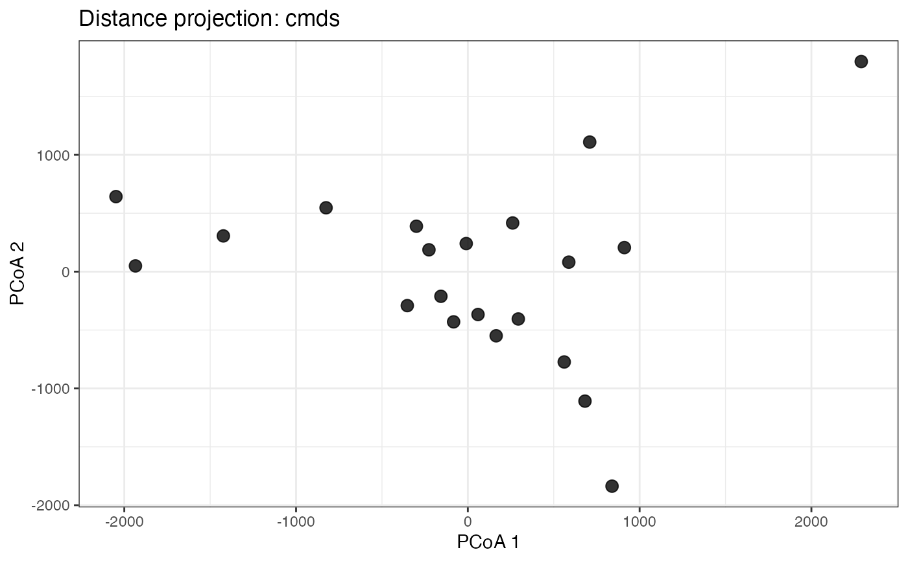
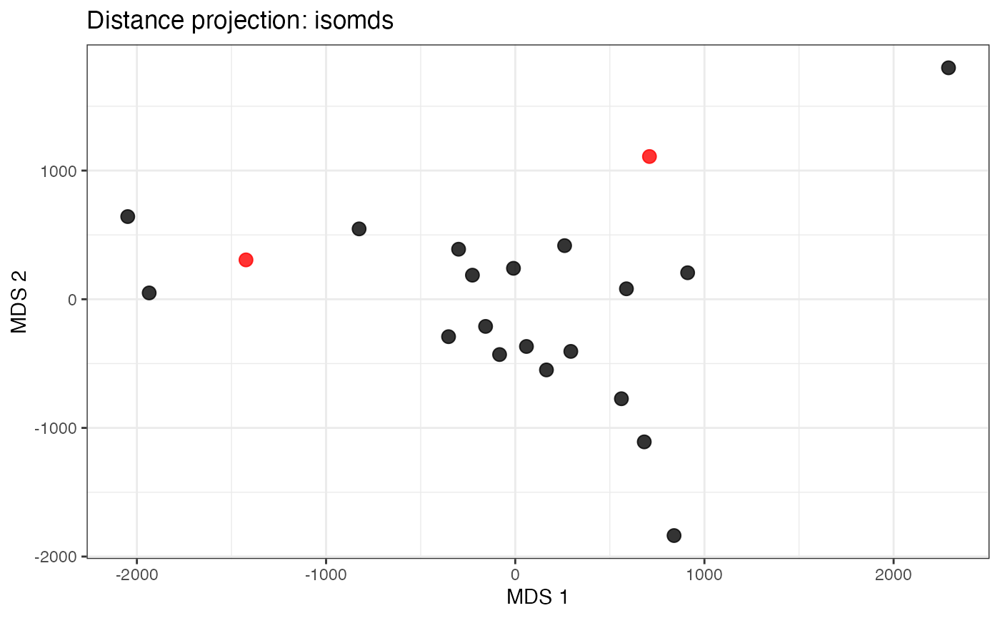
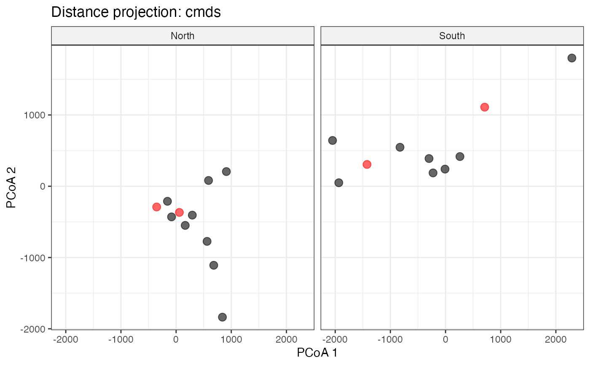

Reduces a distance matrix to two dimensions using Classical MDS, Isotonic
MDS, or t-SNE, and returns a ggplot2 scatter plot in which proximity
reflects similarity. Points can optionally be highlighted or split into facet
panels by group.
Usage
plot_dist(
d,
method = c("cmds", "isomds", "tsne"),
highlight = NULL,
gp = NULL,
point.alpha = 0.6
)Arguments
- d
A distance matrix of class
dist. Labels must be set (i.e.labels(d)must not beNULL). Duplicate labels are not permitted.- method
Character string specifying the dimensionality-reduction method. One of:
"cmds"Classical (metric) Multidimensional Scaling via
cmdscale. This is the default."isomds"Non-metric (isotonic) MDS via
isoMDS. Automatically falls back to"cmds"with a message whenn < 3."tsne"t-distributed Stochastic Neighbour Embedding via
Rtsne. Perplexity is set automatically tomin(30, floor((n - 1) / 3)).
- highlight
Optional character vector of labels to highlight in the plot. Matching identifiers are plotted in red; all others in black.
NULL(default) disables highlighting. Every value must be present inlabels(d).- gp
Optional named character vector mapping labels to group names (
names(gp)= labels, values = group names). When supplied, the plot is split into one facet panel per group viafacet_wrap. The set of names must matchlabels(d)exactly.NULL(default) produces a single panel.- point.alpha
Alpha transparency value for points.
Value
A ggplot object. The plot can be further
customised with standard ggplot2 additions before printing or saving.
Examples
# Basic usage with the built-in eurodist dataset
plot_dist(eurodist)

# Non-metric MDS with two highlighted cities
plot_dist(eurodist, method = "isomds",
highlight = c("Madrid", "Rome"))

# Classical MDS split by a user-defined grouping
regions <-
c(Athens = "South", Barcelona = "South", Brussels = "North",
Calais = "North", Cherbourg = "North", Cologne = "North",
Copenhagen = "North", Geneva = "South", Gibraltar = "South",
Hamburg = "North", `Hook of Holland` = "North", Lisbon = "South",
Lyons = "South", Madrid = "South", Marseilles = "South",
Milan = "South", Munich = "North", Paris = "North",
Rome = "South", Stockholm = "North", Vienna = "North")
plot_dist(eurodist, method = "cmds", gp = regions,
highlight = c("Madrid", "Cherbourg", "Rome", "Brussels"))
